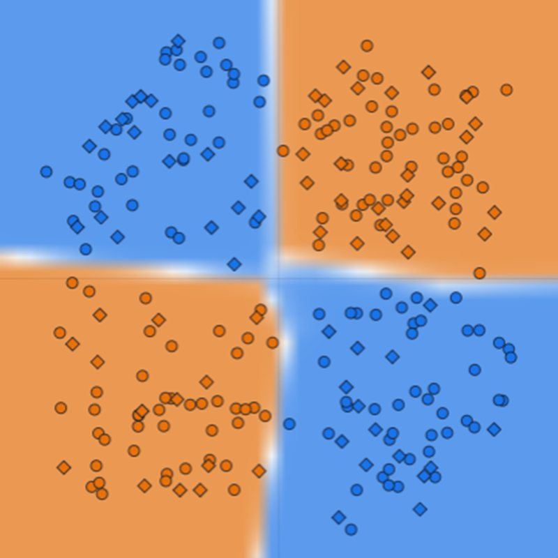
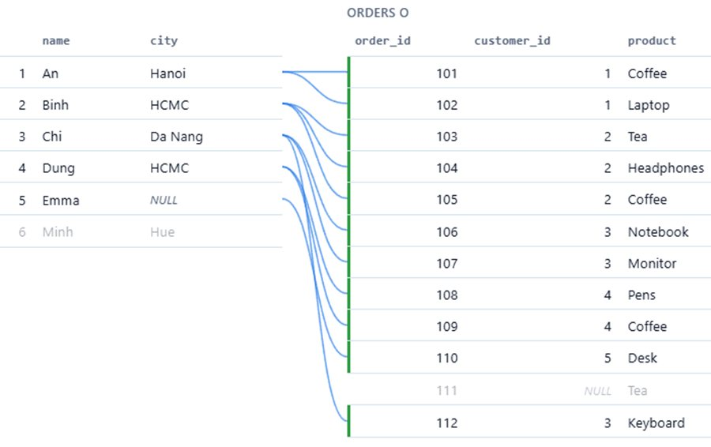

Computer vision
How neural networks learn to see, from a single layer to convolutional networks, AlexNet and ResNet. Short reads with figures you can play with.
Ph.D. Student in Statistics
University of Wisconsin–Madison
I am a Ph.D. student in Statistics at the University of Wisconsin–Madison. [Write 2–3 sentences about your background, what you work on, and what you are looking for.]

How neural networks learn to see, from a single layer to convolutional networks, AlexNet and ResNet. Short reads with figures you can play with.

From your first SELECT to joins, window functions, indexes and transactions, with pictures of what the database does at each step and SQL you can run in the browser.

An interactive price map of Ho Chi Minh City land, houses and apartments. Public listings are parsed with a local LLM, merged into unique properties and geocoded, then each property is valued from comparable properties nearby, with accuracy checked on held-out asking prices.
No projects match this filter.
[Course code: Course title]
Open to collaboration, research discussions, and opportunities. The best way to reach me is by email.